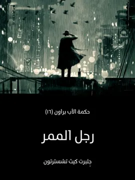

رجل الممر: حكمة الأب براون (١٦)

قراءة عربية أصلية محددة النطاق في الصفحات 7، 8 من ملف PDF المرتبط، وليست تلخيصا كاملا للكتاب. نناقش ما تدعمه هذه المقاطع فقط.
ممر المسرح وخصمان يلتقيان
يرسم تشسترتون مشهده الافتتاحي بدقة سينمائية: ممر يمتد بطول أحد جوانب مسرح أبولو في أديلفي، إحدى نهايتيه تفضي إلى شوارع منحدرة والأخرى إلى مصطبة تطل على النهر المصبوغ بألوان الغروب، أحد جانبيه حائط مطعم مسرحي قديم أغلق أبوابه والآخر يحوي بابين خاصين يستخدمهما البطل والبطلة اللذان يمثلان مسرحية شكسبير المعروضة آنذاك. الرجلان القادمان من النهايتين صديقان مميزان من ذلك النوع، يعرفان البابين وينتظران أن يُفتح لهما، بنفس رباطة الجأش لكن ليس بنفس السرعة.
زاوية وحدود القراءة
قراءة في مطلع قصة «رجل الممر» من مجموعة «حكمة الأب براون» (16) من الصفحتين 7 و8، لا في القصة كاملة. التفاصيل المكانية والمسرحية من النص المترجم كما ورد. الجريمة ودور الأب براون وحل اللغز خارج نطاق الصفحات المقروءة، ولم يظهر الأب براون نفسه بعد.
الطبعة والقراءة
هذه الترجمة العربية صادرة ومتاحة مجانًا من مؤسسة هنداوي بشكل قانوني؛ حيث إن نص العمل الأصلي يقع في نطاق الملكية العامة تبعًا لقوانين الملكية الفكرية.
تنزيل PDF المجاني ↓ القراءة والمصدر الرسمي ↗